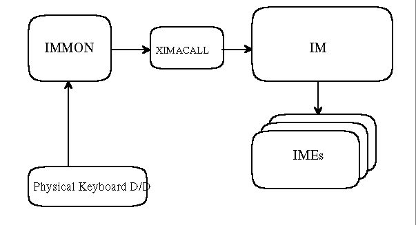

The following shows how IM works with OS/2 Fullscreen Input stuffs quite simply:
To adapt to the new IM32 model, OS/2 Fullscreen Input stuffs need to be modified to work with its new I/F. The above chart only shows two Fullscreen Input stuffs, i.e. IMMON and XIMACALL, but the following modules are also needed to modify.
IMREGIST.EXE
In OS/2 Fullscreen, the current IM16 will be able to co-exist with the new IM32. So, the original (current IM16 support) codes must not be disabled. And they should be utilized to support the new IM32 as much as they can. Their modification should be minimized.
The following sections explain how the IM32 works in OS/2 Fullscreen environment at several situations. Initialization
In order to get session related events, during system IPL, IMREGIST.EXE registers IMDAEMON.DLL to SessionManager. Currently IMDAEMON gets Session Creation and Termination notifications. In addition to this, under IM32, IMDAEMON needs to know the Session Change notification.
To get the new notification, IMREGIST.EXE will added a new notification
type for the session change in the request block using DosSMRegisterDD API.
Session Creation
IMDAEMON.DLL is registered for getting the session related events. At session creation, it is called by SessionManager, initializes its internal data for a new session and loads the IMMON for the session. During this process, IMDAEMON calls ImOpenService API (IM private) to open a new Input Method Service for the session. As the return of this API, it gets a new handle, hIMS and stores it until session termination for subsequent IM32 requests. The hIMS is then passed to the newly loaded IMMON through IMMonInit API.
For this, the request block of IMMonInit is needed to modify as follows:
struct MonInitBlock {
USHORT len_minit;
struct KKMonCmd *pKKMonCmd;
HIMS hIMS; // IM32 IMS Handle
}
The IMMON loaded by IMMonInstall from IMDAEMON initializes its private data area and open a new service from XIMACALL with XimaOpen API. For subsequent IM32 requests, XIMACALL should know the IMS handle for this IMMON (or session). So, the request block of XimaOpen is also needed to modify like below:
typedef struct {
USHORT Length; // Block Length
USHORT XimaHandle; // Xima Handle
UCHAR SGNum; // Screen Group Number
UCHAR XimaEnv; // Environment type of caller
HSEM GiveSem; // syncro between XIMA/IMMON
HSEM TakeSem; //
HIMS hIMS; // IM32 IMS Handle
} XIMA_OPEN_BLK,
//::::: Environment type of caller (XimaEnv) :::::
#define OS2_FULL_SCREEN 0
#define DOS_FULL_SCREEN 1
#define DOS_WINDOWED 2
#define IM32_MODE 128 // addition to original values
XIMACALL calls ImSendEvent with the event, IM_OPENSESSION, in XimaOpen API.
Now, IM32 (i.e.OS2IM.DLL) knows a new Fullscreen session is opened and prepares
a new default IM Instance for the session (or hIMS). Then, XIMACALL subsequently
calls ImQuerySessionDefInstance API to get the newly created IM Instance,
i.e. hIMI, within XimaOpen. With this hIMI, XIMACALL
registers its API entry point to the IM32 using DsmRegisterFunc API. The
registered API entry then will be called by the IM32 whenever IM/IME related
events occurs, e.g. request to display conversion strings.
Session Switch
At session switch, IMDAEMON is called by Session Manager and just notifies
the IM32 of the event happened. This notification is passed by ImSendEvent
with the event, IM_CHANGESESSION.
Session Termination
IMDAEMON gets a notification from Session Manager when the opened session is about to terminate. With this notification, IMDAEMON calls IMMonDeinstall API internally and deinstalls the loaded IMMON from the session.
As the result of this call, the IMMON receives the command, CMD_IMMONDEINSTALL and terminates by itself. Then, its Signal Handler gets control and within the handler, it calls XimaClose API.
XIMACALL releases all allocated resources for this IMMON (or session) with XimaClose. It also deregisters the IM32 worker routine by DsmDeregisterFunc with the stored hIMI. (The hIMI can be also retrieved through ImQuerySessionDefInstance.) Then, to no tify the IM32 of the session termination, it calls ImSendEvent with the event, IM_CLOSESESSION.
After IMMonDeinstall API returns, IMDAEMON calls ImCloseService to release
the IMS handle assigned for the session.
Keyboard Input
IMMON is a usual Keyboard monitor process. It registers itself into the keyboard monitor chain, reads keyboard packets from the chain, processes the packets and finally writes them back to the chain. So, applications can get the processed keyboard packe ts naturally.
In the current IM16 model, when IMMON receives the Keyboard packet, it is passed to XIMACALL through both XimaPreConv and XimaConv APIs. XimaPreConv translates the keyboard scan code to ASCII character code including DBCS characters and Roman conversion service. Then, XimaConv converts the translated characters to linguistical strings using IME.
Under the new IM32 model, when IMMON calls XimaPreConv, XIMACALLS converts
the input packet to the IMCHARINFO (of OS2IM) format and calls ImSendEvent
with the event, IM_CHAR. The further requests, e.g. display candidate list,
are passed to the IM32 worker routine in XIMACALL registered at session
creation.
CodePage Change
When a codepage (keyboard codepage) is changed, the Physical Keyboard Device Driver (PKBD) sends a specific keyboard monitor packet out to the keyboard monitor chain. IMMON can know the new codepage from this packet and sets it to XIMACALL by XimaSetCp A PI.
XIMACALL then calls ImSendEvent with the event, IM_CHANGECP to notify the
IM32 of the new code page.
Keyboard Mode Change
In case of OS/2 Fullscreen session, keyboard modes are handled and managed by PKBD. For example, IMMON receives NLS Mode key packet, e.g. Hiragana in Japan, with NLS mode has been set. This means IMMON doesn't need to manipulate the keyboard modes at all.
However, in order to notify the IM32 of the current or updated keyboard
modes, IMMON, actually XIMACALL has to look at each keyboard packet, and
once it changes the mode, it calls ImSetIMMode API with the updated mode.
This notification has to be made fo r not only physical mode change, but
also software mode change request.
IM16 support
The new OS/2 Fullscreen Input stuffs support both the current IM16 and the
new IM32 models. In case of IME16 selected, they
just work as the current implementation, that is, they might not call the
IM32 for the most of their processings. When IME32 is l oaded, they cooperate
with the IM32 (i.e.OS2IM) as much as they could.
Free PS Support (Setting Dialog)
The IME32s can not display their dialogues in OS/2 Fullscreen environment, as IM system does not support the Free PS (like) Interface. If the IME32 needs to display their dialogues, the IME32 should support Legacy IME16 interface and register with IM_REGF LAG_IME16CALLABLE bit.